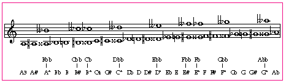

The next table illustrates how the microtone's notes were applied to the standard music notes and staff. This was done to provide to the reader a manner closer to the standard with which to follow the music, and to avoid the numerical description of Example 1. Note that there are slightly more than twice as many intervals in an octave as in the traditional chromatic scale and therefore each interval, as from A to A#, or Db to D, is about half the standard semitone.
Example 2: Microtonality music notes and staff.

Original file name: a4Reteplas - converted on Tuesday, 24 June 1997, 21:00